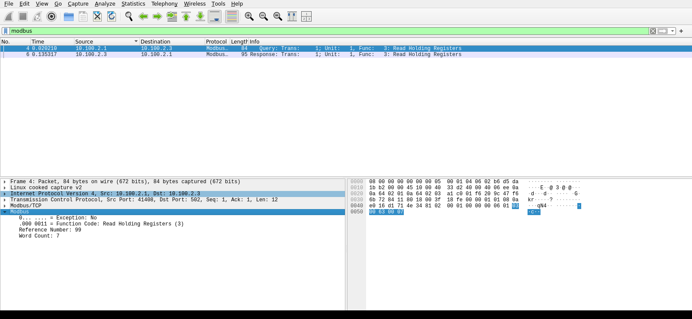
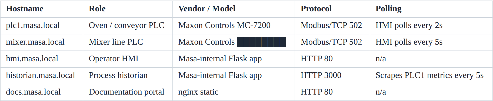

Exercise ICSPT-1.2: Asset Inventory Challenge
Engagement Status
| Client | Masa Foods, Inc. (fictional) |
|---|---|
| Role | OT Security Engineer, Plant 1 |
| Phase | Discovery Enumeration Exploitation Reporting |
What you know so far: You completed the Plant 1 tour and mapped five hosts to their Purdue levels. Reyna Alvarado now needs a first-pass asset inventory on her desk by Monday, and her only rule is "do not upset the mixer PLC."
Environment Checklist
Every ICSPT exercise assumes you read the Before-You-Begin section in Exercise 1.1 (Touring Masa Foods) first. If you have not, open that page now: it explains the two attacker-host options (your own Kali over VPN, or the browser-mounted RangeBox) and walks you through the one-time /etc/hosts setup that lets you call every Plant 1 target by its friendly name.
Exercise 1.2 reaches mixer.masa.local and historian.masa.local. Before you run any recon command, confirm those names resolve and the targets answer:
Kali
Expected: two name-to-IP lines, two successful pings, and two succeeded! messages from nc. If getent returns nothing, you have not populated /etc/hosts for this session yet; re-run the Exercise 1.1 hosts-file block with your current target IPs. If ping or nc fails, the lab is not Running; fix that first (bring the VPN tunnel down and back up, or relaunch the RangeBox and the exercise).
Scenario
Your deliverable is the composite fingerprint of the mixer PLC and the process historian. Specifically, read the mixer's firmware version triplet from its device identification block and pair it with the historian's reported hostname. Reyna will use the combination to tag the mixer in her CMMS and the historian in the plant asset register.
Why this matters
Firmware version is the single highest-value field in an OT asset inventory. Every ICS-CERT advisory, every vendor bulletin, every CVE is scoped to a specific firmware range. If Reyna cannot tell you what version the mixer is running, she cannot map a single advisory to a single action. A plant without a firmware-accurate inventory fails two ways at once: it cannot patch what it does not know about, and it cannot prove compliance with NERC CIP, IEC 62443, or any cyber-insurance questionnaire that asks "what firmware are you running on your critical assets?"
The second reason this exercise exists is more practical. The MC-3100 mixer is known to crash on anything other than Function Code 3. Producing a firmware fingerprint without rebooting a fragile PLC is a career skill. The first time you do it on a real plant, operations will be standing behind you, and one crashed mixer is enough to end the engagement. The habit you build in this exercise is the habit that keeps you employed: read only what you need, use only function codes the vendor guarantees safe, and never test fragility on a device you do not own.
No write operations are permitted. You have the operator HMI credentials (plant_op / masa_op_2025), but they are not needed here because Modbus itself has no authentication.
The flag format is OCR{________} where XXXX is the mixer model code, YYY is the firmware version joined with no dots, and historian is the short hostname of the historian host.
| Credentials in scope | Username | Password | Where it is used |
|---|---|---|---|
| Operator HMI | plant_op |
masa_op_2025 |
Reference only; not used for PLC reads |
Objectives
- Read the mixer PLC device identification block without using write function codes
- Extract the firmware version triplet from the mixer PLC
- Query the historian info endpoint to confirm its hostname
- Construct the composite flag from the mixer model and historian hostname
| Detail | Value |
|---|---|
| Difficulty | Beginner |
| Estimated Time | 25 to 40 minutes |
| Prerequisites | Exercise 1.1 |
| Flag | Source | Found? |
|---|---|---|
OCR{...} |
Composite of mixer firmware triplet and historian hostname |
Background: Modbus Device Identification
Modbus/TCP has no formal "who are you" query. Vendors expose identification data in two ways:
- Function Code 43 (Encapsulated Interface Transport) with sub-function 14 reads a standard device identification object that returns vendor name, product code, and version as ASCII strings.
- Convention-placed holding registers where the vendor packs identification data into a known register block. Maxon Controls uses holding registers 40100 through 40106 for a compact block: four ASCII characters for the vendor, four ASCII characters for the model code, and three integer registers for the firmware version triplet (major, minor, patch).
The MC-3100 mixer supports both, but the convention block is the lighter option. Reading seven holding registers is one Modbus transaction. The FC43 path requires an encapsulated request that some older MC-3100 firmware versions reject. Read-first, fall back only if needed.
Why the mixer is fragile
The MC-3100 at Masa was commissioned in 2014 on firmware 1.8.0, and a controller like it is a small, fixed-function computer: a slow processor, a few hundred kilobytes of memory, and firmware that has not been patched in over a decade. Two limits of that era explain why an unexpected request can crash it.
The first is the receive buffer. The firmware sets aside a small, fixed block of memory to hold each incoming Modbus request, sized for the normal traffic the vendor tested. Send a request longer than that block expects and the extra bytes can spill past the end of it and corrupt nearby memory, which on a small device usually means a hang or a reboot. Modern network stacks bounds-check every byte before storing it; many 2014 embedded stacks did not.
The second is the PDU parser, the code that reads the fields of a request (the function code, the starting address, the register count). Old parsers assume every request is well-formed and handle only the exact function codes the vendor shipped. Hand one an unexpected function code, an out-of-range count, or an odd length, and it can follow an untested path straight into a fault. Newer firmware is fuzz-tested against exactly these malformed inputs; the MC-3100's firmware never was.
Function Code 3 is the safe path because the plant's own HMI and historian have exercised it constantly for twelve years, so that code is proven in the field. The rarely-used paths (the FC43 identification request, diagnostics, unit-id scans, and any write) were barely tested in 2014 and may still hold latent bugs. A crash here is not a lab inconvenience: it drops the mixer controller offline mid-batch, which can spoil product or trip the line. The Plant 1 rule follows directly, which is that a single FC3 read is safe and anything else is risky until proven otherwise.
Tools You Will Need
| Tool | Purpose | Check |
|---|---|---|
mbpoll |
Modbus/TCP command-line client: read holding registers with no code | which mbpoll |
Wireshark / tshark |
Read the Modbus exchange on the wire and confirm the fields | wireshark --version |
curl, jq |
Fetch and parse the historian JSON endpoint | curl --version |
How mbpoll Speaks Modbus (and the Choices That Keep a Plant Safe)
mbpoll is a thin wrapper over the Modbus protocol: every flag you pass becomes a specific request on the wire, and on an OT network the wrong request can stall a production line. Understand what you are actually asking the controller to do before you run a single command.
The four Modbus data tables
Modbus organizes everything a device exposes into four tables. Two hold single bits, two hold 16-bit words, and two are read-only:
| Table | Size | Access | Typical use | mbpoll -t |
Read FC | Write FC |
|---|---|---|---|---|---|---|
| Coils | 1 bit | read/write | digital outputs (run a pump, open a valve) | -t 0 |
1 | 5, 15 |
| Discrete inputs | 1 bit | read only | digital inputs (a limit switch, an e-stop position) | -t 1 |
2 | none |
| Input registers | 16 bit | read only | live sensor readings (a temperature, a flow rate) | -t 3 |
4 | none |
| Holding registers | 16 bit | read/write | setpoints, configuration, and by convention device identity | -t 4 |
3 | 6, 16 |
The device-identification block you are about to read lives in holding registers, so this exercise uses -t 4, which sends Function Code 3 (Read Holding Registers). You only ever need to read, so you never reach a write code.
Reading is observation; writing changes the process
The single most important distinction in OT is read versus write. The read codes (FC1 through FC4) only ask the device to report a value and change nothing. The write codes (FC5, FC6, FC15, FC16) change the device's state, and on a PLC that state drives physical equipment. mbpoll reads when you give it an address and writes the instant you append a value:
mbpoll -t 4 -r 10 -c 1 hostreads register 40010, observation only.mbpoll -t 4 -r 10 host 9000writes 9000 into register 40010 (Function Code 6), changing a setpoint.
In a real engagement you never send a write without written authorization and a maintenance window, because the value you write might be an oven setpoint, a pump speed, or a safety limit. Every command in this exercise is a read.
Why this command uses the flags it does
For the command you run in Checkpoint 1, mbpoll -1 -a 1 -t 4 -r 100 -c 7 mixer.masa.local, each flag is a deliberate choice:
-1(poll once). Without it,mbpollpolls continuously, re-sending the same request every second (the-l <ms>option changes the interval) until you press Ctrl-C. A one-time fingerprint needs a single snapshot, and on a fragile controller continuous polling is needless load. Reach for the continuous mode only when you deliberately need to watch a value change over time, and keep the interval gentle when you do.-a 1(unit identifier). Modbus/TCP carries a one-byte unit id so a single TCP endpoint can front more than one device, for example a gateway bridging several serial slaves behind one IP. The MC-3100 answers on unit id 1, which the vendor register map documents. When the id is unknown you read the documentation, or on a robust device probe a small range; you do not guess on a fragile one. Unit id0is the broadcast address: every device on the link acts on the request and none replies, so never broadcast in a live plant, least of all a write.-t 4(holding registers). Selects the table the identity block lives in and sends the FC3 read that the 2014-era MC-3100 is guaranteed to accept. Switching-tto0,1, or3is how you would read coils or sensor inputs instead.-r 100 -c 7(start and count). A tight, targeted read of exactly the seven registers you need, where-ris the documented register number minus the leading 4. Keep the count small: one FC3 can request up to 125 registers, but a fragile stack is happier with a short read, and a narrow request is quieter on the wire.- Port 502 is the Modbus/TCP default, so there is no
-p. Add-p <port>only when the device listens elsewhere. The-o <seconds>option sets the response timeout if a slow device needs longer than the one-second default.
Options to avoid on a fragile OT device
The same tool that reads safely can disrupt a plant if you reach for the wrong option. On the MC-3100, and on most aging controllers, avoid:
- Appending a value (any write). A trailing value turns the read into FC5/6/15/16 and changes live process state. Confirm authorization first, every time.
- Broadcast (
-a 0). No acknowledgement returns, and a broadcast write hits every device at once. - Aggressive continuous polling or large counts. A tight loop or a 125-register sweep adds load an old embedded TCP stack may not handle. Pace your reads and keep them narrow.
- Unit-id or function-code scanning. Sweeping unit ids or probing non-standard function codes, the way
nmap --script modbus-discoverdoes, can overflow a short receive buffer and reboot a 2014-era PLC. Prefer one documented, targeted read when you are told a device is fragile.
Methodology
Reyna wants a clean inventory in about thirty minutes, and you build the mixer fingerprint with tools, not scripts. Checkpoint 1 reads the device-identification block with one mbpoll command and shows you the same exchange in Wireshark. Checkpoints 2 and 3 add the historian hostname and assemble the flag.
Checkpoint 1: Fingerprint the Mixer from its Device-Identification Block
Where the register numbers come from. You are not guessing addresses. The engineering documentation portal you browsed in Exercise 1.1 publishes the Maxon register map, and Maxon packs a compact device-identification block into holding registers 40100 through 40106 on both the MC-7200 and the MC-3100: two registers of ASCII for the vendor, two for the model code, and three integers for the firmware triplet. On a real plant the move is identical, which is to read the vendor's register map before you touch the PLC.
The documented register, the wire address, and what mbpoll wants. Holding registers are documented in the 4xxxx range. On the wire the address is zero-based and drops the leading 4, so documented register 40100 is wire address 99. The mbpoll tool hides that arithmetic for you: its -r option takes the register number without the leading 4, so -r 100 reads documented register 40100. Reading the seven-register block 40100 through 40106 is therefore -r 100 -c 7.
| Documented register | Holds | mbpoll -r |
|---|---|---|
| 40100, 40101 | vendor code (4 ASCII chars) | 100, 101 |
| 40102, 40103 | model code (4 ASCII chars) | 102, 103 |
| 40104, 40105, 40106 | firmware major, minor, patch | 104, 105, 106 |
Read the block with one command. There is no client to write. mbpoll is the standard Modbus/TCP CLI, and a single read covers the whole block. Function Code 3 (read holding registers) is the one code the fragile MC-3100 is guaranteed to accept.
Kali
-1 polls once and exits, -a 1 is the Modbus unit id, -t 4 selects holding registers (Function Code 3), -r 100 starts at documented register 40100, and -c 7 reads the seven-register block. Port 502 is the default.
Expected output
One command, no code, and the whole device-identification block is on your screen. mbpoll labels each value with its register number, so you read the layout straight off the output.The firmware is already readable. Registers 40104, 40105, and 40106 are the firmware major, minor, and patch as plain integers: 1, 8, 0. That is firmware 1.8.0, the single most valuable field in an asset inventory, with no decoding at all.
The vendor and model code are ASCII packed into the first four registers. Each holding register is 16 bits, which is two bytes, which is two ASCII characters with the high byte first (the Modbus big-endian convention). Convert each register's value to hex, then read the two bytes as characters. Register 40100 reads 19777, which is 0x4D41: 0x4D is M and 0x41 is A, so it carries MA. Apply the same split to registers 40101 through 40103 and the four together spell the Maxon vendor code and the controller family code. The registers give you the family; you resolve the exact model number from the documentation in Checkpoint 3, the way you would read it off a nameplate.
See the same read on the wire. mbpoll is the fast path; Wireshark is how you understand the exchange and, later, write a rule that detects it. You capture the device-ID read once, then read it back field by field.
Capture the query while you run it. The simplest path is to capture live in the Wireshark GUI, which is step 1 of the walkthrough just below: start the capture, run the read, stop it. If you prefer the terminal, use tshark, but capturing needs root and tshark cannot prompt for your sudo password while it runs in the background, so do not background it with &. Use two terminals instead: run tshark in the foreground in the first, run the read in the second, then stop the capture with Ctrl-C.
Kali (terminal 1: start the capture, then leave it running)
Enter your password when prompted.tshark prints Capturing on 'any' and then waits, writing every TCP/502 packet to the file. The -f 'tcp port 502' capture filter keeps the file to just the Modbus conversation. On some Kali builds tshark prints a Couldn't load plugin warning at startup; it is harmless, so ignore it.
Kali (terminal 1: press Ctrl-C to stop, then read the fields back)
Stop the capture with Ctrl-C in terminal 1 first, which flushes the file, then run the command above. You get two rows, the query and its response; the query is the row with the reference number (99) and word count (7) filled in. Those fields (transaction id, unit id, function code, reference number, word count) are the same ones you are about to see laid out in the GUI.Now open the capture in the Wireshark GUI. The terminal proves the data is there; the GUI is where you learn to recognize the exchange on sight. Walk these steps:
- Open the capture. The file is owned by root because the capture used
sudo, so take ownership first, then open it withoutsudo(running the GUI as root breaks its connection to your display):sudo chown $(whoami) /tmp/mixer_id.pcap, thenwireshark /tmp/mixer_id.pcap &. Or inside Wireshark choose File > Open and pick the file. To skip the terminal entirely, capture live: double-click your network interface on the Wireshark welcome screen to start, run thembpollread, then click the red square Stop button in the toolbar. - Filter to Modbus. In the display filter bar directly under the toolbar, type
modbusand press Enter. The packet list narrows to the query and its response. - Select the query. In the Packet List (top pane), click the row whose Info column reads
Query: ... Func: 3: Read Holding Registers. - Expand the MBAP header. In the Packet Details (middle pane), click the arrow to the left of Modbus/TCP to see the Transaction Identifier, Protocol Identifier, Length, and Unit Identifier (the
-a 1you chose shows up here as Unit Identifier 1). - Expand the PDU. Click the arrow next to the Modbus node just below it to read the Function Code (3), the Reference Number (99, the zero-based wire form of register 40100), and the Word Count (7, your
-c 7). - Tie a field to the bytes. Click any field name and watch the matching bytes highlight in the Packet Bytes pane at the bottom, which is how you connect a decoded field to its exact position on the wire.
If Wireshark will not start
Wireshark 6.5 and newer needs the libxcb-cursor0 library. If the GUI aborts with a Qt xcb platform plugin error, install it and try again: sudo apt install -y libxcb-cursor0. A Couldn't load plugin 'falco-events.so' line is unrelated and harmless. If you would rather stay in the terminal, the tshark -T fields extraction above already prints every field the GUI shows.
Your capture should match the figure below:

modbus. The query decodes to Function Code 3 (Read Holding Registers), Reference Number 99 (the zero-based wire form of documented register 40100), and Word Count 7, which is exactly what your -r 100 -c 7 asked for. Reading a protocol exchange this way, rather than scripting it, is the core OT analyst skill, and it is what you turn into a detection signature later.Checkpoint 2: Query the Historian Info Endpoint
The historian runs a real web dashboard, so start where an operator would: in the browser. Open http://historian.masa.local:3000/ in a browser (historian IP from the Exercise Network panel, port 3000) to read the historian dashboard and its source inventory, which lists every device the historian polls along with its address and role.

The dashboard is the human-readable view; the historian also exposes the same inventory as a small JSON status endpoint at /api/info. Pull it with curl to capture the inventory as structured JSON for your asset register, and format it so you can read it, because a raw HTTP response arrives as minified JSON with the whole object on a single line, which is unreadable past a field or two.
Kali
curl -s fetches the endpoint in silent mode, which drops the progress meter so only the JSON body reaches the pipe. jq . pretty-prints the object with indentation so you can scan it, where the . is jq's identity filter that passes the whole object through (bare jq with no filter errors out on older versions). jq is the analyst's standard JSON tool, but a freshly built Kali may not have it installed yet; add it once with sudo apt install -y jq. If you would rather not install anything, curl -s http://historian.masa.local:3000/api/info | python3 -m json.tool formats the same way using a module that ships with Python, and pasting the URL into a browser renders the JSON on its own. To pull out one field instead of reading the whole object, name it: curl -s http://historian.masa.local:3000/api/info | jq -r .hostname prints just historian.masa.local, where -r gives the raw value without quotes.
Expected output
{
"hostname": "historian.masa.local",
"plc_host": "plc1.masa.local",
"plc_metrics_port": 9100,
"scrape_interval_seconds": 5.0,
"site": "Masa Foods Plant 1",
"version": "0.9.2"
}
hostname field reports historian.masa.local. The short form for the flag is historian, which is the part before the first dot. The historian only publishes its onboarding marker on the Exercise 1.1 tour lab, so you will not see that field here.
Do not use the historian version for the flag
The version field above (0.9.2) is the historian application's own software version, not a flag component. The flag's firmware piece is the mixer firmware you read with mbpoll in Checkpoint 1, not the historian's version. Mixing the two is the most common wrong submission on this exercise.
Checkpoint 3: Assemble the Composite Flag
You now hold three facts: the mixer model, its firmware, and the historian hostname. Turn each into the form the flag template OCR{________} expects.
Resolve the full model number, not just the register code. The device-ident registers decoded to the four-character code MC31. Two registers hold only four ASCII characters, so the block carries the controller family code, not the full model number. To get the full designation you cross-reference that family code against documentation, the same way you would read a nameplate in the field. The Plant 1 asset register on the docs portal, the Network Diagram page you opened in Exercise 1.1, names the mixer's full model, and the scenario brief agrees. The register confirms the Maxon family; the asset register gives the exact model. Use that documented model number for the flag's mcXXXX field rather than the abbreviated MC31 from the register.

http://docs.masa.local/network.html yourself and read the Vendor / Model column for mixer.masa.local to get the number the flag needs.Firmware. You read 1.8.0. The template wants the triplet with the dots removed, so the firmware field is v followed by those three digits in their original order.
Historian hostname. The /api/info response reported historian.masa.local. The short hostname is the label before the first dot: historian.
| Flag field | Where it comes from | Resolves to |
|---|---|---|
mcXXXX |
register code MC31, resolved to the full model via the asset register |
mc + model number |
vYYY |
the mixer firmware from Checkpoint 1 (not the historian version), dots stripped | v + three digits |
historian |
historian short hostname from /api/info |
historian |
Substitute the three values you resolved into the template OCR{________} and submit the result in the OCR platform flag box. The platform tells you immediately whether the composite is correct, so you do not need the finished string printed here.
Output Interpretation
MAXOis a four-byte ASCII code carried in two 16-bit registers. Big-endian byte order (high byte first) is the Modbus convention and the Maxon convention- Firmware triplets as three integer registers is a common pattern because it survives network byte-order questions and is trivial to parse
- The historian returns its own canonical hostname from the OS
gethostname()call inside the container. Short hostnames are common on plant equipment because they make log lines easier to read - The historian also leaks the PLC host (
plc1.masa.local) and its scrape interval (5 seconds). Both of these feed directly into the Week 2 traffic analysis exercises
Safety Rules You Followed
| Rule | How this exercise complied |
|---|---|
| No write function codes on the mixer | Only FC3 was used |
| No port scans against the mixer | Only one targeted read query was sent |
| No credential brute force | Read-only dashboards were queried with curl |
| Short, well-formed requests | A single seven-register read with a five-second timeout |
Analysis Questions
1. Why is the firmware version worth recording, even if the device is in simulation?
Reveal answer
Firmware version is the single most important field in an OT asset inventory because nearly every published vulnerability is tied to a specific firmware range. Without firmware data, you cannot map advisories (ICS-CERT, vendor bulletins, CVE) to your asset. A clean inventory with firmware lets you prioritize patching, schedule maintenance windows, and triage newly disclosed bugs in minutes rather than days.
2. Why did you query the historian hostname from the /api/info endpoint instead of trusting the hostname printed on the dashboard?
Reveal answer
The dashboard banner is static HTML and could be overridden by a template variable or proxy. The /api/info endpoint returns the runtime hostname reported by the container process itself, which is more authoritative. In real plants you should similarly prefer runtime facts (SNMP sysName, container gethostname, banner from the service itself) over decorative labels on a dashboard.
3. The mixer PLC accepted your read with no authentication. Is that a vulnerability in the traditional IT sense?
Reveal answer
In the IT sense, yes. In the OT sense, it is a documented feature of Modbus/TCP. Modbus was designed for a serial field bus with physical access control and has no authentication primitive. The "vulnerability" is the network that exposes the PLC, not the protocol. Your recommendation to Masa should be a segmentation control (firewall, data diode, or one-way feed), not a demand that the vendor add authentication to a 1979 protocol.
4. What would happen if you used nmap --script modbus-discover against the MC-3100?
Reveal answer
The NSE script sends a small batch of non-standard Modbus probes to enumerate slave IDs and unit identifiers. On modern PLCs it is safe. On older controllers like the MC-3100, it can trigger a receive buffer overflow in the vendor stack and cause the PLC to reboot. Reyna's "do not upset the mixer" rule is exactly this scenario. Prefer a single targeted read (one mbpoll Function Code 3 query) when you are told a device is fragile.
Defensive Recommendations to Masa
| Finding | Risk | Mitigation |
|---|---|---|
| Mixer and tortilla PLC reachable from the plant office subnet | Medium | Place PLCs on an isolated VLAN behind a plant firewall |
| No PLC asset inventory exists in the CMMS | Medium | Add firmware version, serial, and responsible owner to every PLC record |
Historian /api/info endpoint leaks PLC metadata without authentication |
Low | Add basic authentication or network-level allowlist before Phase 2 rollout |
| Mixer PLC firmware is several minor versions behind the vendor's current release | Medium | Record the exact version in the CMMS, then schedule a maintenance window and upgrade with Maxon support |
Key Takeaways
- Device identification blocks are the fastest way to fingerprint a PLC without triggering vendor quirks
- Firmware version is the single most valuable asset-inventory field
- Prefer targeted reads over NSE scripts on fragile PLCs
- Plaintext HTTP info endpoints are common and useful during an assessment
- The composite fingerprint (PLC model + firmware + historian hostname) is the first data point that lets you correlate advisories to Plant 1 assets